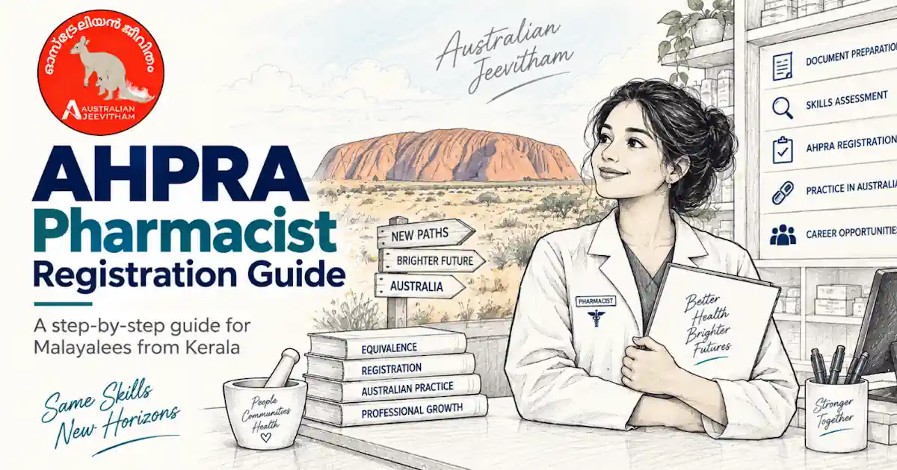
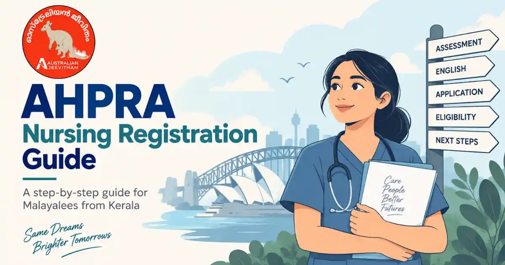
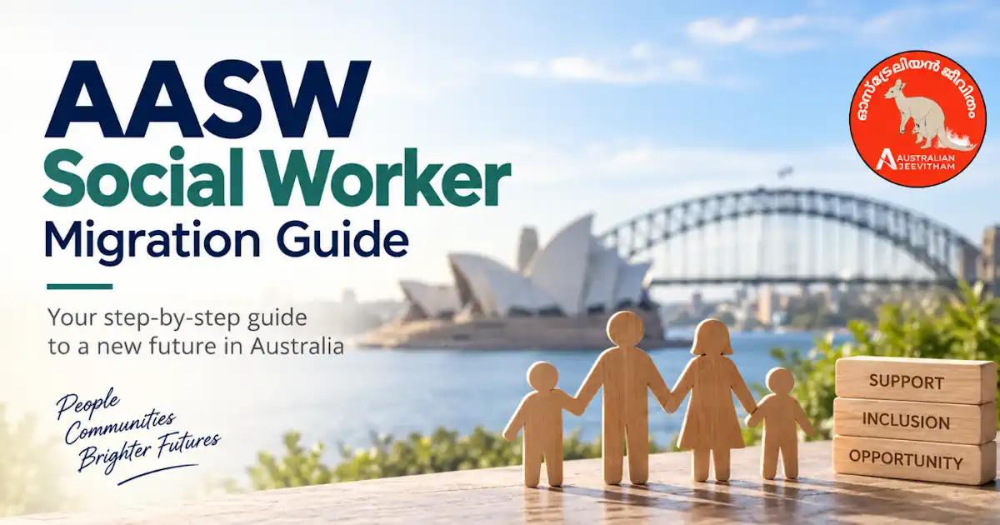
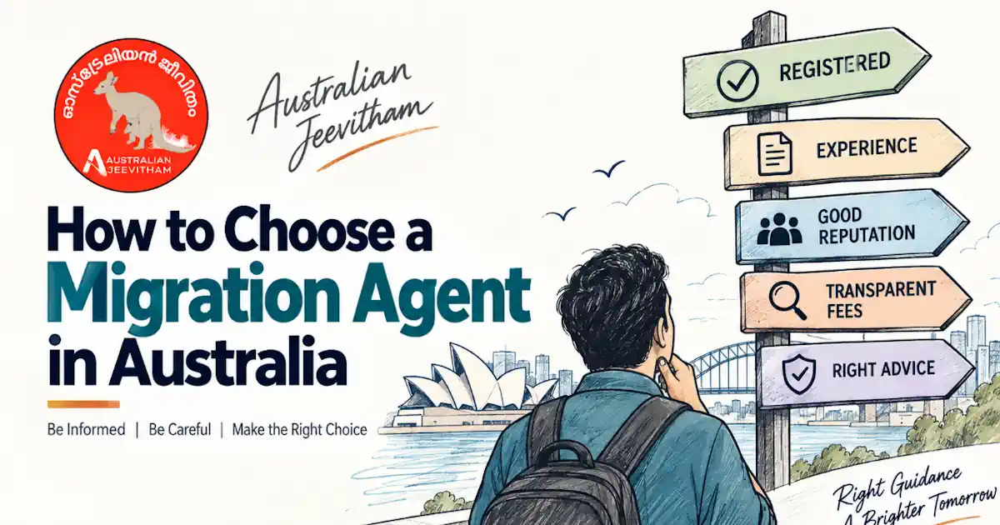

ഓസ്ട്രേലിയൻ ഫാർമസിസ്റ്റ് രജിസ്ട്രേഷൻ (APC & Ahpra) സമ്പൂർണ്ണ മാർഗ്ഗരേഖ 2026
കേരളത്തിൽ പഠിച്ചോ കേരള സ്റ്റേറ്റ് ഫാർമസി കൗൺസിലിൽ രജിസ്റ്റർ ചെയ്തോ ഉള്ള ഫാർമസിസ്റ്റുകൾ ഓസ്ട്രേലിയൻ രജിസ്ട്രേഷൻ അന്വേഷിക്കുമ്പോൾ മനസ്സിലാക്കേണ്ട പ്രധാന ഘട്ടങ്ങൾ - APC Skills Assessment, OPRA പരീക്ഷ (പഴയ KAPS മാറ്റിയ പുതിയ പരീക്ഷാരീതി), Competency Stream (CAOP), പ്രൊവിഷണൽ രജിസ്ട്രേഷൻ, 1,575 മണിക്കൂർ ഇന്റേൺഷിപ്പ്, ബോർഡ് പരീക്ഷകൾ, വിസ ഓപ്ഷനുകൾ എന്നിവയെല്ലാം ഇതിൽ വിശദീകരിക്കുന്നു.
A Kerala-focused registration roadmap for pharmacists who trained in Kerala/India and are seeking pharmacist registration in Australia - covering APC skills assessment, the OPRA exam (replacing KAPS), CAOP stream, Ahpra provisional registration, the mandatory 1,575-hour supervised practice, Intern Training Programs (ITP), Board oral/written exams, and permanent residency visa options.
Last updated: September 2026 · Created for Malayali and Indian-trained pharmacists living overseas

ഇന്ത്യൻ ബിരുദധാരികൾക്ക് OPRA പരീക്ഷയും തുടർന്ന് ഓസ്ട്രേലിയയിൽ 1,575 മണിക്കൂർ ഇന്റേൺഷിപ്പും പൂർത്തിയാക്കേണ്ടതുണ്ട്. Indian B.Pharm/Pharm.D graduates clear the OPRA exam, secure provisional Ahpra registration, and complete 1,575 supervised practice hours in Australia.
- Knowledge Stream
- OPRA Exam (New KAPS)
- Competency Stream (CAOP)
- Provisional Registration
- 1,575 Supervised Hours
- Intern Training Program (ITP)
- Board Oral & Written Exams
- Subclass 190 / 491 / 482 / 186
ഈ പേജ് കേരളത്തിൽ നിന്നുള്ള ഫാർമസിസ്റ്റുകൾക്ക് പൊതുവിവരം നൽകുന്നതിനായി തയ്യാറാക്കിയതാണ്. ഇത് വ്യക്തിഗത രജിസ്ട്രേഷൻ തീരുമാനമോ മൈഗ്രേഷൻ ഉപദേശമോ നിയമോപദേശമോ അല്ല. APC, Ahpra, the Pharmacy Board of Australia and Australian visa requirements can change. Always verify the current pathway, fees and document requirements on the official Australian Pharmacy Council, Pharmacy Board of Australia, Ahpra and Department of Home Affairs websites before paying fees or making migration decisions. For visa advice, use a registered migration agent.
1. ഓസ്ട്രേലിയൻ ഫാർമസിസ്റ്റ് രജിസ്ട്രേഷൻ വഴികൾ (Registration Pathways for Kerala Pharmacists)
കേരളത്തിൽ B.Pharm / Pharm.D പഠിച്ച ഫാർമസിസ്റ്റുകൾക്ക് സാധാരണയായി APCയുടെ Knowledge Stream ആണ് പ്രസക്തമായ വഴി. എന്നാൽ നിങ്ങൾ UK, Ireland, Canada അല്ലെങ്കിൽ USA എന്നിവിടങ്ങളിൽ qualifying pharmacy education/registration നേടിയിട്ടുണ്ടെങ്കിൽ Competency Stream പരിശോധിക്കാം.
A. Knowledge Stream / OPRA - കേരളത്തിൽ പഠിച്ച ഫാർമസിസ്റ്റുകൾക്ക് സാധാരണയായി പ്രസക്തമായ വഴി
APC eligibility നിങ്ങളുടെ qualification-ന്റെ academic equivalence അടിസ്ഥാനമാക്കിയാണ് വിലയിരുത്തുന്നത്. “B.Pharm ആണെങ്കിൽ automatic eligibility” എന്ന രീതിയിൽ കരുതരുത്.
- Qualification requirement: For qualifications completed after 1 January 2006, APC generally requires a qualification comparable to at least 4 years of full-time academic study. For qualifications completed before 1 January 2006, a 3-year minimum can apply under the Knowledge Stream criteria.
- Kerala applicants: A Kerala/India B.Pharm or Pharm.D may fit the Knowledge Stream if APC accepts the qualification as comparable. APC makes the formal determination through its Eligibility Check.
- Registration evidence: APC states that pharmacist registration evidence is not required simply to establish Knowledge Stream eligibility. If you hold Kerala State Pharmacy Council (KSPC) registration, keep it available because registration history may still be relevant later in the overall registration process.
- OPRA exam: OPRA has replaced KAPS for the Knowledge Stream. It is a 150-minute computer-based exam with 120 multiple-choice questions and can be booked at authorised Pearson VUE test centres, including centres in India.
- After OPRA: Successful Knowledge Stream candidates can progress toward provisional registration with Ahpra/Pharmacy Board, approved supervised practice, an accredited Intern Training Program (ITP), the intern written exam and the Pharmacy Board oral exam.
B. Competency Stream / CAOP - only if you meet the specific country criteria
കേരളത്തിൽ പഠിച്ചു പിന്നീട് വിദേശത്ത് ജോലി ചെയ്തതുകൊണ്ട് മാത്രം CAOP pathway ലഭിക്കില്ല. APCയുടെ country-specific eligibility criteria പാലിക്കണം.
- Eligible jurisdictions: APC's Competency Stream applies to pharmacists who meet the qualifying education/adjudication and current-registration requirements in Canada, Ireland, the United Kingdom or the United States.
- Current registration: You must hold current pharmacist registration in the qualifying jurisdiction and meet APC's detailed Competency Stream criteria.
- CAOP exam: The CAOP exam is a 2-hour computer-based examination with 70 questions. The current exam fee is AUD 2,100.
- Supervised practice: Competency Stream applicants do not normally follow the standard Knowledge Stream internship/ITP pathway. The Pharmacy Board determines any required period of supervised practice and limited registration conditions for the individual applicant.
C. New Zealand / Trans-Tasman Mutual Recognition
ന്യൂസിലാൻഡിൽ ഇതിനകം രജിസ്റ്റർ ചെയ്ത ഫാർമസിസ്റ്റുകൾക്ക് Trans-Tasman Mutual Recognition arrangements പ്രകാരം വേറിട്ട Australian registration pathway ഉണ്ടായേക്കാം. This route should be treated as a separate recognition pathway for people who already hold eligible New Zealand registration, not as an automatic shortcut for a Kerala pharmacist starting from India. Identity, criminal-history and other registration requirements can still apply.
2. കേരളത്തിൽ നിന്ന് അപേക്ഷിക്കുന്നവർക്ക് സ്റ്റെപ്പ്-ബൈ-സ്റ്റെപ്പ് പ്രക്രിയ (Typical Knowledge Stream Route)
-
APC Eligibility Check
APC Candidate Portal-ൽ account തുറന്ന് Eligibility Check ആരംഭിക്കുക. കേരളത്തിൽ നിന്നുള്ള നിങ്ങളുടെ B.Pharm / Pharm.D qualification, academic records, identity documents എന്നിവ APC ആവശ്യപ്പെടുന്ന format-ൽ നൽകുക. The current Knowledge Stream Eligibility Check fee is AUD 810. APC does not require pharmacist registration evidence merely to establish Knowledge Stream eligibility, and Knowledge Stream applicants do not need to certify documents if APC's current upload instructions say clear scans/photos of originals are acceptable. Non-English documents require an acceptable English translation. -
Pass the OPRA Exam
Eligibility approved ആയാൽ OPRA exam book ചെയ്യുക. കേരളത്തിൽ നിന്ന് തന്നെ ഇന്ത്യയിലെ authorised Pearson VUE test centre വഴി exam എഴുതാൻ സാധിക്കാം; available centres booking സമയത്ത് പരിശോധിക്കുക. The current OPRA fee is AUD 2,245. OPRA contains 120 MCQs over 150 minutes and tests biomedical, pharmaceutical and clinical sciences, with the largest weighting in therapeutics and patient care. -
Obtain the APC Skills Assessment Outcome if needed
OPRA വിജയിച്ച ശേഷം migration purpose-നായി APC Skills Assessment Outcome ആവശ്യമായാൽ അപേക്ഷിക്കാം. The current fee is AUD 300. Since 1 July 2026, eligible pharmacists can also request renewal of an expired/expiring skills assessment outcome under APC's updated validity arrangements. Migration-purpose outcomes are generally valid for three years from issue. -
Meet the Pharmacy Board English Language Standard
Ahpra/Pharmacy Board registration-നായി നിലവിലെ English language standard പാലിക്കണം. 23 April 2026 മുതൽ എടുത്ത test-ുകൾക്ക് പുതുക്കിയ score table ബാധകമാണ്. See the English section below and always check Ahpra's current accepted-test table for the exact test date and two-sitting minimums. -
Secure an Approved Supervised-Practice Position
ഓസ്ട്രേലിയയിലെ community അല്ലെങ്കിൽ hospital pharmacy-യിൽ Pharmacy Board requirements പാലിക്കുന്ന supervised-practice position കണ്ടെത്തണം. Approved preceptor/supervision arrangements ആവശ്യമാണ്. You then apply for provisional registration with Ahpra/Pharmacy Board and enrol in an accredited Intern Training Program (ITP) where required. -
Complete 1,575 Hours of Approved Supervised Practice
Knowledge Stream intern pathway-ൽ 1,575 മണിക്കൂർ approved supervised practice പൂർത്തിയാക്കണം. To become eligible for the Pharmacy Board oral examination, interns generally need at least 75% of the required hours - 1,181 hours - completed, and must satisfy the Board's other examination requirements, including the intern written examination requirements. -
Pass the Intern Written and Pharmacy Board Oral Examinations
APC Intern Written Exam-ും Pharmacy Board Oral Exam-ും വിജയിക്കണം. The current APC Intern Written Exam fee is approximately AUD 790. Always check the current Board examination eligibility, application deadlines and fee schedule before booking. -
Apply for General Registration
supervised practice, ITP, exams, registration standards എന്നിവ എല്ലാം പൂർത്തിയാക്കിയ ശേഷം Ahpra വഴി general registration-ന് അപേക്ഷിക്കാം. General registration is granted only when all Pharmacy Board requirements are satisfied.
Important: Securing an Internship Can Be Difficult
OPRA പരീക്ഷ പാസാകുന്നത് മാത്രം ഓസ്ട്രേലിയയിൽ internship / supervised-practice position ലഭിക്കുമെന്ന് ഉറപ്പുനൽകുന്നില്ല. നിലവിൽ suitable intern pharmacist positions കണ്ടെത്തുന്നത് പല applicants-നും ബുദ്ധിമുട്ടായേക്കാം, പ്രത്യേകിച്ച് overseas-qualified pharmacists-ന്. അതിനാൽ OPRA വിജയിച്ചതിന് ശേഷം ഉടൻ internship ലഭിക്കും എന്ന ധാരണയിൽ Australia relocation, visa, accommodation തുടങ്ങിയ വലിയ സാമ്പത്തിക തീരുമാനങ്ങൾ എടുക്കരുത്.
Passing the OPRA exam does not guarantee an internship or supervised-practice position in Australia. Securing a suitable position can be competitive and may be one of the most challenging stages of the registration pathway for overseas-qualified pharmacists. Applicants should research current employment opportunities carefully and should not assume that passing OPRA will automatically lead to an internship, employment, sponsorship, or registration.
3. കേരളത്തിൽ നിന്ന് അപേക്ഷിക്കുമ്പോൾ ആവശ്യമായ രേഖകൾ (Documents & Evidence)
APC Eligibility Check-നും പിന്നീട് Ahpra/Pharmacy Board registration-നും ഒരേ document list തന്നെയാണെന്ന് കരുതരുത്. ഓരോ ഘട്ടത്തിനും ആവശ്യമായ രേഖകൾ വ്യത്യാസപ്പെടാം.
- Identity: Current passport and any additional identity or name-change evidence requested by APC/Ahpra.
- Pharmacy qualification: B.Pharm / Pharm.D degree certificate and academic records/transcripts requested by APC.
- Kerala State Pharmacy Council registration: If you hold KSPC registration, keep the certificate and registration history available. However, APC does not require pharmacist registration evidence merely to establish Knowledge Stream eligibility.
- Good Standing / Registration Verification: Do not assume a KSPC Certificate of Good Standing must be sent to APC for every Knowledge Stream Eligibility Check. Provide registration verification or good-standing evidence when the relevant APC, Ahpra or Pharmacy Board stage specifically requests it.
- Translations: Documents not in English should be translated according to the current APC/Ahpra requirements. Check the required translator/accreditation standard before arranging translations.
- Criminal history: Ahpra registration applications involve criminal-history requirements. International criminal-history checks are handled according to Ahpra's current process; do not obtain checks early unless the application instructions require them.
4. ഇംഗ്ലീഷ് ഭാഷാ യോഗ്യതാ മാനദണ്ഡങ്ങൾ (Tests taken on or after 23 April 2026)
Kerala applicants Ahpra/Pharmacy Board registration-നായി National Boards English language skills standard പാലിക്കണം. 23 April 2026 മുതൽ എടുത്ത test-ുകൾക്ക് താഴെയുള്ള current minimum scores ബാധകമാണ്.
ട്രാൻസിഷൻ: Tests taken on or before 22 April 2026 may fall under the previous/transition score table. Always match the Ahpra score table to the date you actually sat the test.
IELTS Academic
Overall 7.0
Listening 7.0 · Reading 7.0 · Writing 6.5 · Speaking 7.0
OET
Listening 350 · Reading 360 · Writing 350 · Speaking 360
PTE Academic
Overall 63
Listening 58 · Reading 59 · Writing 60 · Speaking 76
Cambridge C1 Advanced
Overall 178
Listening 175 · Reading 179 · Writing 180 · Speaking 194
Cambridge C2 Proficiency
Overall 185
Listening 185 · Reading 185 · Writing 176 · Speaking 185
TOEFL iBT Australia
Overall 91
Listening 22 · Reading 22 · Writing 23 · Speaking 24
Two-sitting / Clubbing Rule: Results from a maximum of two sittings within a 12-month period may be accepted, but each test has specific minimum floor scores that must be met in each sitting. Results from different test providers cannot be combined. Check the official Ahpra score table before booking or relying on a result.
5. പ്രവാസികൾ ഒഴിവാക്കേണ്ട പ്രധാന അബദ്ധങ്ങൾ (Common Pitfalls to Avoid)
1. KAPS-ൽ നിന്ന് OPRA-യിലേക്കുള്ള മാറ്റം മനസ്സിലാക്കാതിരിക്കുക: പഴയ KAPS പരീക്ഷയ്ക്ക് പകരമാണ് OPRA. OPRA biomedical, pharmaceutical, pharmacology, therapeutics, patient-care knowledge എന്നിവ പരിശോധിക്കുന്നു; therapeutics and patient care-ന് ഏറ്റവും വലിയ weighting ഉണ്ട്. APCയുടെ current OPRA exam guide അടിസ്ഥാനമാക്കി തയ്യാറെടുക്കുക; Australian-specific law/practice content OPRAയുടെ പ്രധാന assessment focus ആണെന്ന് കരുതരുത്.
2. ഇന്റേൺഷിപ്പ് സ്പോൺസർഷിപ്പ് ഓഫറുകളിലെ തട്ടിപ്പുകൾ: ഓസ്ട്രേലിയയിൽ ഫാർമസി ഇന്റേൺഷിപ്പ് ഉറപ്പുനൽകാമെന്ന് പറഞ്ഞ് ലക്ഷങ്ങൾ കമ്മീഷൻ വാങ്ങുന്ന വ്യാജ ഏജന്റുമാരെ വിശ്വസിക്കരുത്. ഇന്റേൺഷിപ്പ് ജോലി കണ്ടെത്തേണ്ടത് ഔദ്യോഗിക ജോബ് പോർട്ടലുകൾ (SEEK, LinkedIn, Pharmacy Guild) വഴിയോ നേരിട്ട് ഫാർമസികളുമായി ബന്ധപ്പെട്ടോ ആണ്. ശമ്പളമില്ലാത്തതോ കാഷ്-ഇൻ-ഹാൻഡ് രീതിയിലുള്ളതോ ആയ ജോലികൾ Fair Work നിയമങ്ങൾക്ക് വിരുദ്ധമാണ്.
3. യോഗ്യതയില്ലാത്ത ഡിപ്ലോമ സർട്ടിഫിക്കറ്റുകൾ: ഇന്ത്യയിലെ രണ്ട് വർഷത്തെ ഡി.ഫാം (D.Pharm Diploma) മാത്രമുള്ളവർക്ക് നേരിട്ട് APC സ്കിൽ അസസ്മെന്റ് ലഭിക്കില്ല. qualification APCയുടെ Knowledge Stream academic-equivalence requirement പാലിക്കണം. 1 January 2006-ന് ശേഷം പൂർത്തിയാക്കിയ qualification-ുകൾക്ക് സാധാരണയായി കുറഞ്ഞത് 4 വർഷം full-time academic study-നോട് comparable ആയിരിക്കണം.
4. സൂപ്പർവൈസ്ഡ് മണിക്കൂറുകൾ കൃത്യമായി രേഖപ്പെടുത്താതിരിക്കുക: ഫാർമസി ബോർഡ് അംഗീകരിച്ച പ്രിസെപ്റ്ററുടെ കീഴിൽ മാത്രമേ 1,575 മണിക്കൂർ ചെയ്യാവൂ. ലോഗ് ബുക്കുകളും ITP അസൈൻമെന്റുകളും കൃത്യസമയത്ത് അപ്ലോഡ് ചെയ്യാതിരുന്നാൽ ജനറൽ രജിസ്ട്രേഷൻ വൈകാൻ ഇടയാക്കും.
5. പഴയ ഇംഗ്ലീഷ് സ്കോർ ടേബിൾ വെച്ച് ടെസ്റ്റ് ബുക്ക് ചെയ്യുക: 2026 ഏപ്രിലിലെ Ahpra അപ്ഡേറ്റിന് ശേഷം PTE Speaking സ്കോർ 66-ൽ നിന്ന് 76 ആയി ഉയർന്നു, Ahpra current score table OET minimums numerical scores ആയി പ്രസിദ്ധീകരിക്കുന്നു. പഴയ ലക്ഷ്യസ്കോർ വെച്ച് തയ്യാറെടുത്ത് പരീക്ഷ എഴുതിയാൽ, ആവശ്യമായ Speaking നിലവാരം കൈവരിക്കാതെ പോകാൻ സാധ്യതയുണ്ട്.
Indicative Fee Structure & Cost Snapshot (2026)
These are current published figures for key APC steps, but fees can change. Ahpra/Pharmacy Board application, registration, oral-exam, ITP, travel and visa costs are additional.
APC Knowledge Stream
Eligibility Check: AUD 810
OPRA Exam: AUD 2,245
Skills Assessment Outcome: AUD 300
Competency Stream
CAOP Exam: AUD 2,100
Only for applicants who meet APC's specific Competency Stream eligibility criteria.
Intern Written Exam
APC Intern Written Exam: approximately AUD 790. ITP provider fees and Pharmacy Board oral-exam fees are separate.
Registration & Other Costs
Budget separately for Ahpra/Pharmacy Board application and registration fees, ITP fees, English testing, translations, supervised-practice relocation costs, visa charges, travel and accommodation.
7. ജോലിയും വിസ ഓപ്ഷനുകളും (Jobs & Migration Options)
Kerala pharmacists-ന് Australian registration pathway പൂർത്തിയാക്കുന്നതും migration pathway തിരഞ്ഞെടുക്കുന്നതും രണ്ട് വേറെ കാര്യങ്ങളാണ്. APC skills assessment, Ahpra registration, employer sponsorship, state nomination എന്നിവ ഓരോന്നിനും വേറെ eligibility rules ഉണ്ട്.
- Subclass 482 - Skills in Demand (SID): a temporary employer-sponsored skilled visa, subject to current occupation, sponsorship, work-experience and other eligibility rules.
- Subclass 190 - Skilled Nominated: a permanent skilled visa requiring state or territory nomination and an invitation to apply.
- Subclass 491 - Skilled Work Regional (Provisional): a provisional regional visa available through state/territory nomination or eligible family sponsorship, with a potential pathway to permanent residence if the relevant requirements are met.
- Subclass 186 - Employer Nomination Scheme (ENS): a permanent employer-sponsored visa with different streams and eligibility requirements.
Do not assume that pharmacist registration automatically creates visa eligibility, or that an APC skills assessment guarantees state nomination. Check Home Affairs and the relevant state/territory migration program, or obtain advice from a registered migration agent.
Kerala Pharmacist FAQ (പതിവായി ചോദിക്കുന്ന ചോദ്യങ്ങൾ)
1. കേരളത്തിൽ നിന്നുള്ള ബി.ഫാം / ഫാം.ഡി യോഗ്യത വെച്ച് നേരിട്ട് ഓസ്ട്രേലിയൻ രജിസ്ട്രേഷൻ ലഭിക്കുമോ?
സാധാരണയായി ഇല്ല. Kerala-trained applicants ആദ്യം APC Knowledge Stream eligibility പരിശോധിക്കണം. Qualification APCയുടെ academic-equivalence criteria പാലിച്ചാൽ OPRA വഴി അടുത്ത ഘട്ടത്തിലേക്ക് പോകാം. OPRA വിജയിച്ചതിന് ശേഷം provisional registration, approved supervised practice, ITP and intern examinations ഉൾപ്പെടുന്ന Pharmacy Board requirements പൂർത്തിയാക്കണം.
2. APC Knowledge Stream-ന് കെ.എസ്.പി.സി (KSPC) രജിസ്ട്രേഷൻ നിർബന്ധമാണോ?
Knowledge Stream eligibility തെളിയിക്കാൻ pharmacist registration evidence APC നിർബന്ധമാക്കുന്നില്ല. KSPC registration ഉണ്ടെങ്കിൽ അത് സൂക്ഷിക്കുക, കാരണം registration history പിന്നീട് Ahpra/Pharmacy Board ഘട്ടങ്ങളിൽ പ്രസക്തമാകാം. എന്നാൽ “KSPC registration ഇല്ലെങ്കിൽ APC Eligibility Check ചെയ്യാനാകില്ല” എന്ന് കരുതരുത്.
3. OPRA പരീക്ഷ എന്താണ്?
OPRA (Overseas Pharmacist Readiness Assessment) ആണ് Knowledge Stream-ൽ പഴയ KAPS പരീക്ഷയ്ക്ക് പകരം വന്നത്. ഇത് 150 മിനിറ്റിൽ 120 multiple-choice questions ഉള്ള computer-based exam ആണ്. Biomedical sciences, medicinal chemistry/biopharmaceutics, pharmacokinetics/pharmacodynamics, pharmacology/toxicology, therapeutics and patient care എന്നിവയാണ് പ്രധാന മേഖലകൾ.
4. OPRA എഴുതാൻ ഓസ്ട്രേലിയയിലേക്ക് യാത്ര ചെയ്യേണ്ടതുണ്ടോ?
അവശ്യമായില്ല. OPRA Pearson VUE വഴി നടത്തുന്നതിനാൽ India ഉൾപ്പെടെ authorised international test centres ലഭ്യമായേക്കാം. Booking സമയത്ത് available centre/location നേരിട്ട് പരിശോധിക്കുക.
5. Knowledge Stream ഇന്റേൺഷിപ്പിൽ എത്ര സൂപ്പർവൈസ്ഡ് മണിക്കൂറുകൾ വേണം?
നിലവിലെ standard internship requirement 1,575 മണിക്കൂർ approved supervised practice ആണ്. Pharmacy Board oral exam eligibility-ക്ക് സാധാരണയായി അതിന്റെ 75% ആയ 1,181 മണിക്കൂർ പൂർത്തിയാക്കിയിരിക്കണം, കൂടാതെ Boardയുടെ മറ്റ് exam requirements പാലിക്കണം.
6. കേരളത്തിലെ ഫാർമസിസ്റ്റുകൾക്ക് CAOP പാത ഉപയോഗിക്കാമോ?
Kerala qualification മാത്രം ഉള്ളതുകൊണ്ട് CAOP ലഭിക്കില്ല. APC Competency Stream-ന് Canada, Ireland, UK അല്ലെങ്കിൽ USA എന്നിവിടങ്ങളിലെ qualifying education/adjudication plus current pharmacist registration സംബന്ധിച്ച specific criteria പാലിക്കണം.
7. ഡിപ്ലോമ (D.Pharm) മാത്രമുള്ളവർക്ക് നോളജ് സ്ട്രീമിൽ അപേക്ഷിക്കാമോ?
APC qualification-equivalence criteria ആണ് നിർണ്ണായകം. 1 സ്ഥാപനം അല്ലെങ്കിൽ 1 January 2006-ന് ശേഷം പൂർത്തിയാക്കിയ qualification സാധാരണയായി കുറഞ്ഞത് 4 വർഷത്തെ full-time academic study-നോട് comparable ആയിരിക്കണം. അതുകൊണ്ട് 2-year D.Pharm മാത്രം സാധാരണയായി ഈ academic threshold പാലിക്കില്ല.
8. 2026 ഏപ്രിലിലെ ഇംഗ്ലീഷ് സ്കോർ മാറ്റം എന്നെ ബാധിക്കുമോ?
23 April 2026-നോ അതിന് ശേഷമോ test എഴുതിയാൽ പുതിയ score table ബാധകമാണ്. 22 April 2026-നോ അതിന് മുൻപോ എടുത്ത results transition/previous table പ്രകാരം വിലയിരുത്തപ്പെടാം. Test date അനുസരിച്ച് Ahpraയുടെ official score table പരിശോധിക്കുക.
9. APC സ്കിൽ അസസ്മെന്റ് ഔട്ട്കോം എത്രകാലം സാധുവാണ്?
Migration-purpose Skills Assessment Outcome സാധാരണയായി issue date മുതൽ 3 വർഷം valid ആണ്. 1 July 2026 മുതൽ eligible pharmacists-ക്ക് renewed outcome request ചെയ്യാനുള്ള updated APC process ലഭ്യമാണ്.
ഔദ്യോഗിക വെബ്സൈറ്റുകൾ (Official Resources)
ഏജൻസികളെ ആശ്രയിക്കുന്നതിന് മുൻപ് ഈ ഔദ്യോഗിക വെബ്സൈറ്റുകൾ സന്ദർശിച്ച് വിവരങ്ങൾ ഉറപ്പുവരുത്തുക.
Bookmark these verified portals before applying:
More on registration, migration & job applications

AHPRA Nursing Registration
A step-by-step roadmap for internationally qualified nurses covering Stream B, OBA, NCLEX-RN, OSCE, and English requirements.
- AHPRA / NMBA
- NCLEX & OSCE
- Healthcare

AASW Social Worker Guide
AASW Migration & Eligibility Assessment: 1,000-hour field education, IELTS Academic requirements, fees, and visa pathways for Kerala-qualified social workers.
- AASW / MEA
- 1,000 hrs Fieldwork
- IELTS Only
PR Points Calculator Guide
Complete points breakdown for Subclass 189, 190, and 491 visas, NAATI CCL Malayalam, Professional Year, and state nomination bonuses.
- 65-Point Threshold
- NAATI CCL
- GSM Visas

Choose a Migration Agent
RMA vs immigration lawyer, OMARA/MARN verification, disciplinary checks, trust accounts, Form 956, and how to spot visa scams.
- OMARA / MARN
- Consumer Protection
- Scam Warnings
Resume & Cover Letter Guide
ATS-friendly formatting, tailored cover letters, selection criteria and STAR examples for Malayalis applying for Australian jobs.
- ATS-Friendly
- STAR Examples
- Job Applications
News Coverage
Fact-checks and features from India Today Malayalam and Manorama Online on backyard farming, toddy-tapping, and life in Townsville.
- India Today
- Manorama Online
- As Featured In